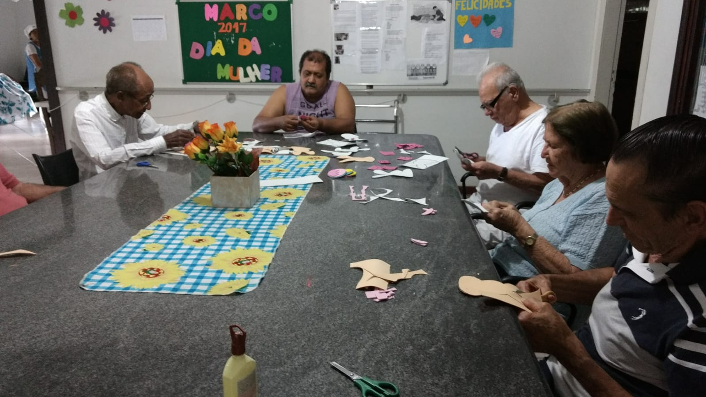

Envelhecimento ativo, autonomia e qualidade de vida
Acompanhamento terapêutico especializado focado em envelhecimento ativo, manutenção de autonomia, estimulação cognitiva e bem-estar emocional. Trabalhamos atividades que promovem qualidade de vida e significado.

Acreditamos que envelhecer é um processo natural e que pode ser vivido com qualidade, autonomia e significado. Nossos atendimentos buscam:
Utilizamos diversas atividades para estimular e engajar:
Os atendimentos são personalizados conforme as necessidades e possibilidades de cada idoso:
Tenho experiência consolidada em atendimentos a idosos, com formação específica em Gerontologia pela PUC. Trabalho com sensibilidade, respeito e compreensão das particularidades do envelhecimento, valorizando a história de vida e a dignidade de cada pessoa.
Gostaria de conhecer mais sobre nossos atendimentos para idosos? Entre em contato para agendar uma consulta e conversar sobre como podemos contribuir para a qualidade de vida.